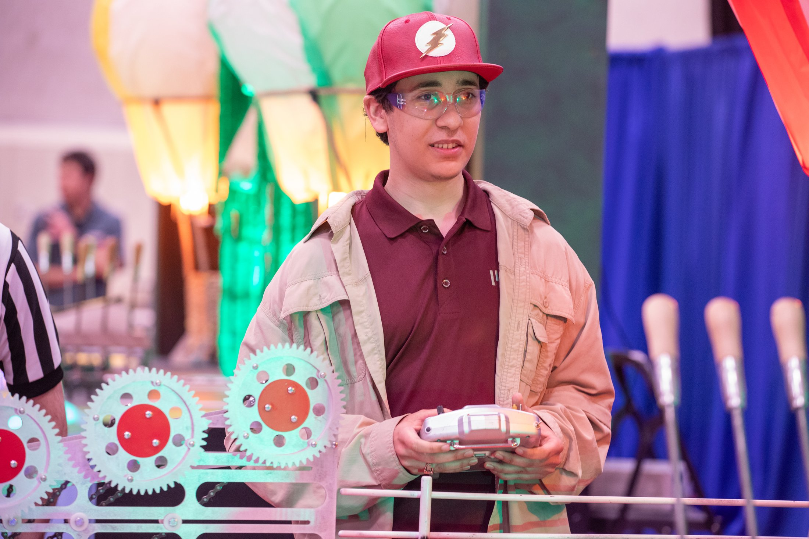
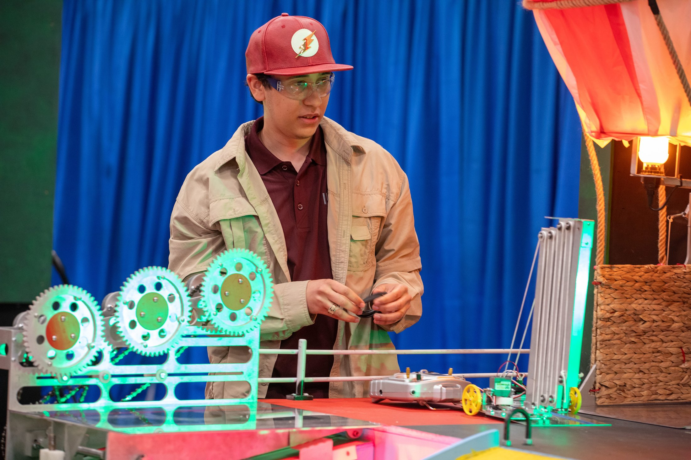
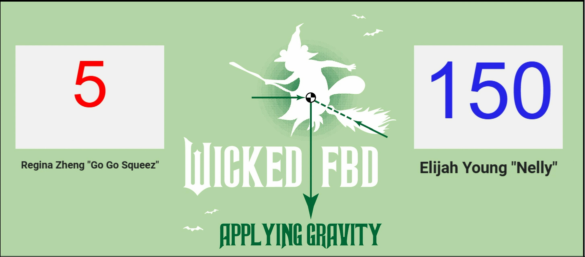

A 2.007 competition robot built for a "Wicked"-themed game table: two-wheel rear drive on a pair of speed motors, a 5-stage linear slide that telescopes from 15.5" up to over 57" to retrieve a broom hanging above the table, and a separate actuated claw on the base that grasps the broom and holds it while I drive it onto my side of the board.
Role
Mechanical design and fabrication
Outcome
16th of the night, into the final day
Size / weight
12"x12"x16", 4 lb 2 oz
Methods
CAD, machining, prototyping, testing
Match footage: the linear slide extending to reach the broom.
Challenge
2.007 hands you a game table and lets you build almost anything to compete on it. The hard part isn't coming up with a good mechanism, it's picking one that will still work after you've cut it, assembled it, and run it a hundred times under match conditions.
Constraints
Everything had to be manufacturable with the shop processes actually available in lab.
Over 150 students were building against the same table, so the margin for a slow or fragile design was thin.
There was no time to design in isolation. Every choice had to get tested and revised fast.

At the driver station.

The linear slide's pulley system, on the table.
Design Approach
Mostly a loop, repeated a lot of times: design a mechanism, cut it, bolt it on, see what breaks, fix that, run it again. Reliability mattered more than cleverness by the end. The final robot kept the drivetrain deliberately simple, two wheels, rear drive, so the more complicated part of the design, the reach mechanism, had a stable base to work from.
Key Decisions
Drive is two-wheel rear drive on a pair of 25-3 speed motors. Scoring uses two separate mechanisms on the base: a 5-stage linear slide on a pulley system, powered by a single 25-2 torque motor, that telescopes from a stowed 15.5" up to over 57" to retrieve the broom, and a separate actuated claw that then grasps the broom once it's back within reach. I still owe this section the gear ratios and the rest of the scoring strategy. Ask me directly if you want the details before I get to it.
Fabrication
Machining, rapid prototyping, and assembly were most of the actual project. I still need to add photos of the tolerance-sensitive parts and the fixturing that made them repeatable.
Testing
The result below only happened because of a lot of repeated testing. The video above is real match footage; I don't have test logs from the build phase uploaded yet.
Results
Placed 16th out of the field competing that night, advancing to the final day of the MIT 2.007 competition.
Scored 150 points in the seeding round. In my first round of head-to-head competition, Monday night, I won 150 points to 5 after successfully securing the broom, shown on the scoreboard below.

Scoreboard from that first-round match.
Improve Next
I want to write this from my actual build notes rather than guess at it after the fact, so it's still on my list. Check back, or ask and I'll tell you what I remember.